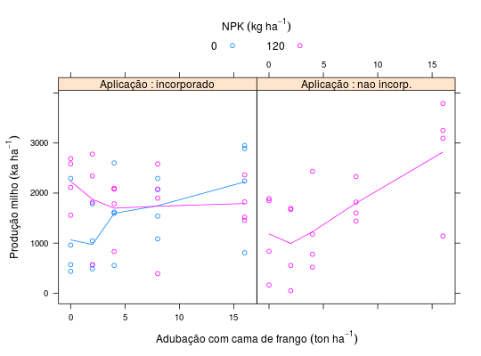
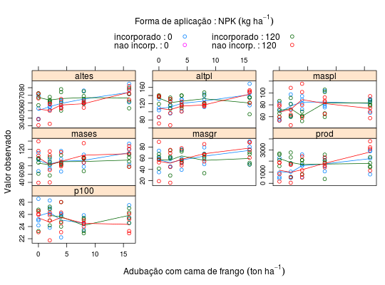

Experimento instalado e conduzido por Walmes M. Zeviani, estudante do 4 ano de Agronomia da UFGD na época, na Fazenda Dinorah em Jateí - MS na safra de inverno de 2006. No experimento foram avaliadas doses de cama de frango como fonte de adubação orgânica na cultura do milho. Três fatores foram estudados: forma de aplicação da cama de frango, quantidade aplicada e complementação com adubação mineral (NPK). Os três fatores combinados resultam em um arranjo fatorial incompleto devido a ausência de uma cela experimental que não era de interesse. O experimento foi instalado em blocos para controlar para o efeito da declividade do terreno.
Na figura acima tem-se a delimitação entre algumas parcelas (contorno linhas retas brancas com vértices nas estacas).
Um data.frame com 60 observações e 11 variáveis.
aplicnpkcamablocoaltesaltplmasplmasesmasgrprodp100Arquivo pessoal de Walmes M. Zeviani.
library(lattice) data(Dinorah) xyplot(prod ~ cama | aplic, data = Dinorah, groups = npk, type = c("p", "a"), layout = c(NA, 1), auto.key = list(title = expression("NPK"~(kg~ha^{-1})), cex.title = 1, columns = 2), strip = strip.custom(strip.names = TRUE, var.name = "Aplicação"), xlab = expression("Adubação com cama de frango"~(ton~ha^{-1})), ylab = expression("Produção milho"~(ka~ha^{-1})))ftable(xtabs(~aplic + cama + npk, data = Dinorah))#> npk 0 120 #> aplic cama #> incorporado 0 4 4 #> 2 4 4 #> 4 4 4 #> 8 4 4 #> 16 4 4 #> nao incorp. 0 0 4 #> 2 0 4 #> 4 0 4 #> 8 0 4 #> 16 0 4library(reshape2) din <- melt(data = Dinorah, id.vars = names(Dinorah)[1:4], measure.vars = names(Dinorah)[-(1:4)], value.name = "valor", variable.name = "resp") str(din)#> 'data.frame': 420 obs. of 6 variables: #> $ aplic: Factor w/ 2 levels "incorporado",..: 1 1 1 1 1 1 1 1 1 1 ... #> $ npk : int 0 0 0 0 0 0 0 0 0 0 ... #> $ cama : int 0 0 0 0 2 2 2 2 4 4 ... #> $ bloco: int 1 2 3 4 1 2 3 4 1 2 ... #> $ resp : Factor w/ 7 levels "altes","altpl",..: 1 1 1 1 1 1 1 1 1 1 ... #> $ valor: num 38.4 69.8 52.8 39.2 60 54.6 55.2 50.8 62.6 54 ...xyplot(valor ~ cama | resp, data = din, groups = interaction(aplic, npk, sep = " : "), type = c("p", "a"), as.table = TRUE, auto.key = list(title = expression( "Forma de aplicação : NPK"~(kg~ha^{-1})), cex.title = 1, columns = 2), scales = list(y = "free"), xlab = expression( "Adubação com cama de frango"~(ton~ha^{-1})), ylab = "Valor observado")